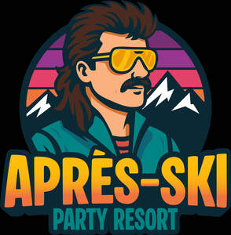

Trade Mark Journal No.2025/037 12 September 2025
UK00004257452 29 August 2025 (29,30,32,33,35,43)

- Class 29
- Seafood; Fish-based snack food; Soy-based food bars; Cooked seafood; Meat-based snack food; Vegetarian charcuterie; Vegetable-based snack food.
- Class 30
- Coffee drinks; Sushi; Meal; Pizza; Prepared pizza meals; Pizza sauces.
- Class 32
- Beer; Malt beer; Bock beer; Non-alcoholic beer; Saison beer; Beers; Low-alcohol beer; Craft beer; Barley wine [Beer]; Barley wine [beer]; Black beer [toasted-malt beer]; Beer and brewery products; Ginger beer; Flavored beer; Wheat beer; Coffee-flavored beer; Beer wort; Non-alcoholic beers; Frozen hops for brewing beer; Root beer; Root beers, non-alcoholic beverages; Dried hops for brewing beer; Non-alcoholic beer flavored beverages; Craft beers; Lager; Alcohol-free beers; Hop pellets for brewing beer; Imitation beer; De-alcoholized beer; Flavored beers; Black beer; Root beers; Flavoured beers; De-alcoholised beer; Low alcohol beer; Bitter [Beers]; Beer-based beverages; Non-alcoholic malt drinks; Ale; Non-alcoholic malt beverages; Hops (Extracts of -) for making beer; Extracts of hops for making beer; Non-alcoholic beer-based cocktails; Hop extracts for manufacturing beer; Beer-based cocktails; Coffee-flavored ale; Lagers; Non-alcoholic wine; Kvass [non-alcoholic beverage]; Sarsaparilla [non-alcoholic beverage]; Kvass [non-alcoholic beverages]; Carbonated non-alcoholic drinks; Cider, non-alcoholic; Cola drinks; Ginger ale; Non-alcoholic beverages with tea flavor; Non-alcoholic beverages flavored with coffee; Malt syrup for beverages; Non-alcoholic drinks; Non-alcoholic beverages flavoured with coffee; Non-alcoholic malt free beverages [other than for medical use]; Non-alcoholic soda beverages flavoured with tea; Non-alcoholic carbonated beverages; Ales; Non-alcoholic flavored carbonated beverages; Alcohol free wine; Non-alcoholic wines; Alcohol free cider; Non-alcoholic fruit drinks; Non-alcoholic beverages; Beverages (Non-alcoholic -); Non-alcoholic beverages flavored with tea; Non-alcoholic fruit vinegar beverages; Non-alcoholic beverages flavoured with tea.
- Class 33
- Flavored brewed alcoholic malt beverages, except beers; Flavoured brewed alcoholic malt beverages, except beers; Alcoholic beverages, except beer; Alcoholic beverages (except beer); Beverages (Alcoholic -), except beer; Alcoholic carbonated beverages, except beer; Alcoholic beverages except beers; Alcoholic beverages (except beers); Alcoholic beverages [except beers]; Wine coolers [drinks]; Pre-mixed alcoholic beverages, other than beer-based; Whiskey; Whiskey [whisky]; Malt whisky; Rum [alcoholic beverage]; Alcoholic fruit cocktail drinks; Wine-based drinks; Aperitifs with a distilled alcoholic liquor base; Baijiu [Chinese distilled alcoholic beverage]; Wine.
- Class 35
- Retail services in relation to alcoholic beverages (except beer); Online ordering services in the field of restaurant take-out and delivery; Business management assistance in the establishment and operation of restaurants; Wholesale services in relation to alcoholic beverages (except beer).
- Class 43
- Beer bar services; Beer garden services; Serving beverages in microbreweries; Serving beverages in brewpubs; Sushi restaurant services; Fast-food restaurant services; Hotel restaurant services; Take-out restaurant services; Bar and restaurant services; Restaurant and bar services; Take-away restaurant services; Carvery restaurant services; Ramen restaurant services; Restaurant services; Salad bars [restaurant services]; Tempura restaurant services; Washoku restaurant services; Restaurant reservation services; Restaurants; Carry-out restaurants; Japanese restaurant services; Self-service restaurant services; Grill restaurants; Mobile restaurant services; Reservation of restaurants; Spanish restaurant services; Udon and soba restaurant services; Booking of restaurant seats; Serving food and drink for guests in restaurants; Catering in fast-food cafeterias; Serving food and drink in restaurants and bars; Restaurants (Self-service -); Self-service restaurants; Restaurant services for the provision of fast food; Tourist restaurants; Restaurant services incorporating licensed bar facilities; Fast food restaurants; Bistro services; Delicatessens [restaurants]; Providing food and drink for guests in restaurants; Provision of food and drink in restaurants; Providing restaurant services; Eateries; Restaurant information services; Providing food and drink in restaurants and bars; Restaurant services provided by hotels; Catering of food and drinks; Food and drink catering; Catering of food and drink; Catering (Food and drink -); Food and drink catering for banquets; Serving food and drink in doughnut shops; Brasserie services; Reservation and booking services for restaurants and meals; Cafe services; Hotel catering services; Food and drink catering for institutions; Agency services for reservation of restaurants; Hotel reservations; Providing food and drink in bistros; Serving food and drink in Internet cafes; Takeaway food and drink services; Take-away food and drink services; Cocktail lounge buffets; Food and drink catering for cocktail parties; Takeaway food services; Take-away food services; Serving food and drink for guests; Resort hotel services; Making reservations and bookings for restaurants and meals; Catering services for company cafeterias; Providing food and drink in doughnut shops; Serving food and drinks; Catering for the provision of food and drink; Reservation of hotel accommodation; Café services; Hotel reservation services; Take-away fast food services; Hospitality services [food and drink]; Providing reviews of restaurants and bars; Hotel services; Hotel accommodation reservation services; Wine bar services; Corporate hospitality (provision of food and drink); Providing food and drink catering services for exhibition facilities; Providing room reservation and hotel reservation services; Guesthouse; Providing hotel and motel services; Pet hotel services; Catering for the provision of food and beverages; Providing food and drink in Internet cafes; Catering services for providing European-style cuisine; Snack bar services; Consultancy services in the field of food and drink catering; Pizza parlors; Providing reviews of restaurants; Catering services for the provision of food and drink; Tapas bars; Catering services for providing Japanese cuisine; Providing food and drink catering services for convention facilities; Club services for the provision of food and drink; Rental of dishes; Coffee bar services; Hotel room booking services; Providing food and drink for guests; Night club services [provision of food]; Providing food and drink catering services for fair and exhibition facilities; Hotel accommodation services; Private members dining club services; Hookah bar services; Self-service cafeteria services; Catering services for providing Spanish cuisine; Catering.
Apres Ski Party Ltd